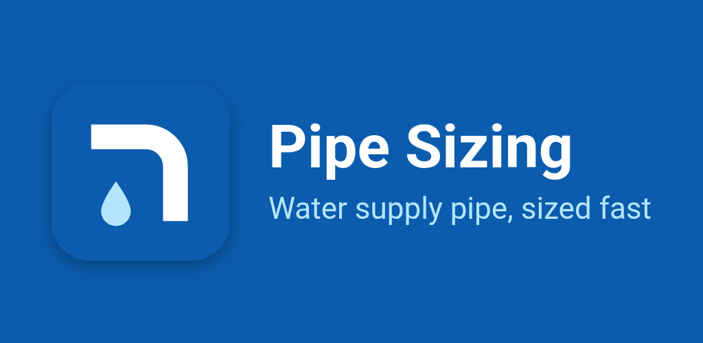
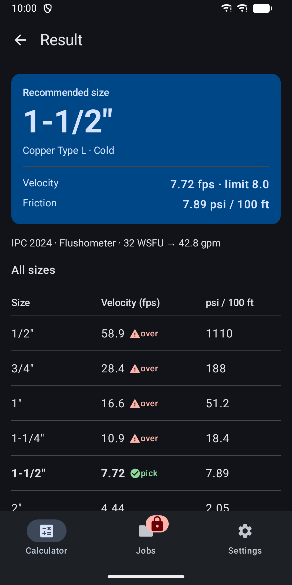
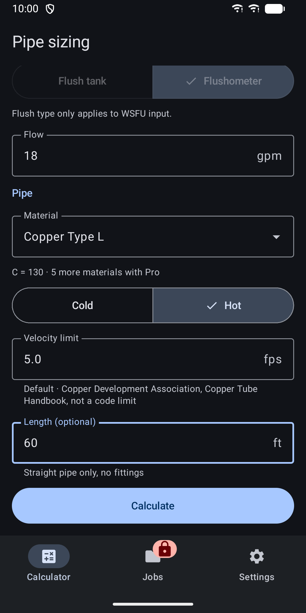
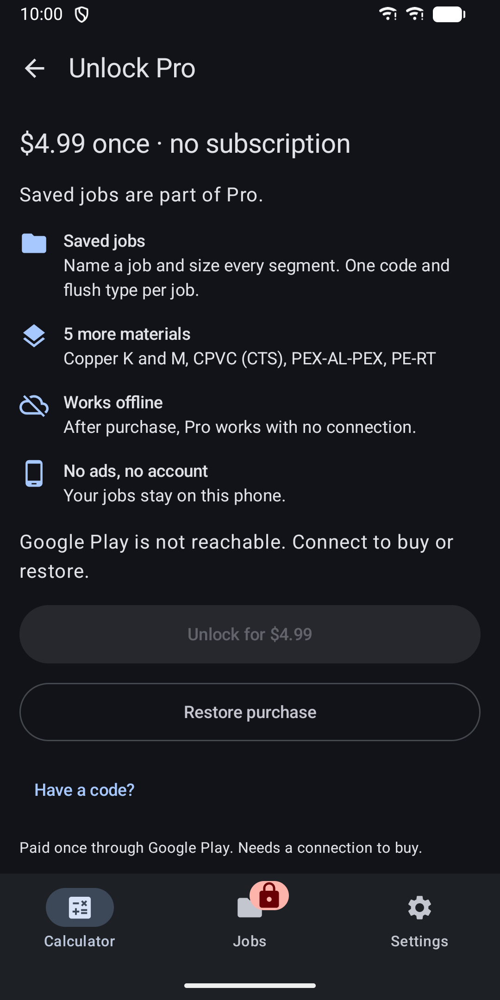

Dimensionar tuberías IPC y UPC
Dimensiona tuberías de agua con WSFU o GPM: velocidad y pérdida de carga







Acerca de la app
Pipe Sizing dimensiona tuberías de suministro de agua. Introduce las unidades de aparatos (WSFU) o el caudal en galones por minuto (GPM), elige el material y obtén el tamaño recomendado con su velocidad y su pérdida de carga. Funciona sin conexión, no necesita cuenta y se adapta a móviles y tabletas. Pensada para fontaneros de EE. UU., aprendices, presupuestadores y quienes preparan el examen de fontanería. Usa unidades de EE. UU. La app está en inglés. QUÉ HACE - Recomienda la tubería más pequeña, de 1/2 a 4 pulgadas, que cumple el límite de velocidad. - Muestra la velocidad en pies por segundo y la pérdida de carga en psi por 100 ft de cada tamaño, en una tabla compacta. - Calcula la pérdida de carga total de un tramo recto cuando introduces una longitud. - Admite IPC y UPC, ediciones 2024 y 2021, con los números de sección de cada resultado. - Convierte WSFU a GPM con la curva de Hunter, de dominio público, para sistemas con cisterna o con fluxómetro. - Usa Hazen-Williams con valores C de diseño y diámetros interiores publicados. - Fija límites de velocidad por defecto según el código o, si el código no los indica, según las recomendaciones del fabricante, marcadas claramente como no normativas. Puedes cambiar el límite y volver al valor por defecto. - Cambia el límite por defecto entre agua fría y agua caliente. - Avisa cuando el tamaño recomendado es menor que un mínimo del código, como una acometida de 3/4 de pulgada. - Muestra tu último cálculo en un widget de la pantalla de inicio. INCLUIDO SIN COMPRA - Calculadora de un solo tramo. - Cobre tipo L y PEX. - Tu último resultado se guarda y aparece en el widget. PRO, COMPRA ÚNICA DENTRO DE LA APP - Trabajos guardados: pon nombre a un trabajo, define una vez el código, la edición y el tipo de descarga, y dimensiona cada tramo con su propio material, temperatura y límite de velocidad. La pérdida de carga se muestra por tramo. No hay total del trabajo. - Cinco materiales más: cobre tipo K y M, CPVC (CTS), PEX-AL-PEX y PE-RT. - Tras la compra, Pro funciona sin conexión. Puedes restaurar la compra en la pantalla de desbloqueo. PRIVACIDAD - Sin cuenta y sin analíticas. - Tu último resultado y tus trabajos guardados se quedan en tu dispositivo. - La copia de seguridad en la nube está desactivada. - La app no solicita el permiso de internet. Solo Google Play gestiona la compra. ACCESIBILIDAD - Tema claro y oscuro según el ajuste del sistema. - Etiquetas para lectores de pantalla, tamaños leídos con palabras y zonas táctiles grandes. IMPORTANTE Los valores se calculan con datos de dominio público y pueden diferir ligeramente de las tablas impresas del código. La app es una herramienta de consulta. No sustituye al código vigente ni a la autoridad competente. No incluye accesorios, contadores, desniveles, presión de red ni enmiendas estatales o locales. Los tamaños mínimos del código se indican, pero no se imponen.